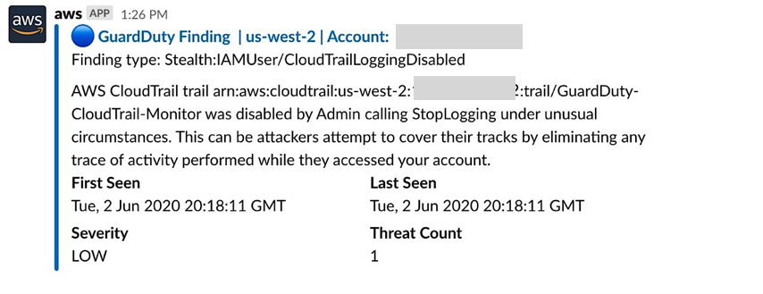
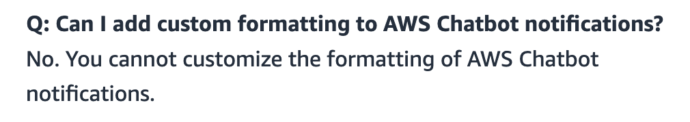

AWS Chatbot is a great service, which makes it a lot easier (than it was before with webhooks and stuff) to send notifications from your AWS environment to a Slack channel (it also supports Amazon Chime).
Through CloudWatch Alarms and EventBridge Event Rules you can make yourself a pretty great alerting infrastructure, with alerts configured to send a message to your Slack channel whenever there is a GuardDuty finding for example.

There is just one teeny-tiny limitation to all this, you can not customize the messages that get sent from the service and kudos to Amazon this is explicitly mentioned in the FAQ:

Since the messages are sent to an SNS Topic first and then AWS Chatbot takes the payloads from the Topic, you might be wondering if there is a way to spoof these messages and format them to your liking, the answer is yes, but with limitations.
Examples of event formats for most services can be found here, but you can also dig into a specific services documentation to find more thorough examples.
The following format is what worked in our case (you can take this as is and then modify the detail-type field to your liking):
{
"version": "0",
"id": "bd32e686-148j-6971-ku24-0e2416655gh4l2",
"detail-type": "<!here> The answer is 42 🚀",
"source": "aws.ecs",
"account": "123456789012",
"time": "2022-11-10T01:54:34Z",
"region": "eu-central-1",
"resources": [],
"detail": {}
}
Tom Stroobants has a great article on this same topic, but I guess Amazon might have found out about his workaround and patched a few things.
(One thing that is not mentioned in Toms article is that you can use Slacks way of formatting text with mentions, links to channels and etc.)
The current state of this workaround is that only the detail-type field can be used to deliver your customized messages, unlike in Toms article where he also uses the region field. Now if you try modify the region field to anything other than a valid region name, Chatbot fails to pick up and forward the message to your channel.
The only difference between sources is that some of them use a different icon in the “header” part of the message, but that might also take some time to get right.
One great use case we found for this is to send a spoofed message with the AWS SDK to the SNS Topic whenever something goes wrong in our applications, but hopefully everyone can find their use for it.